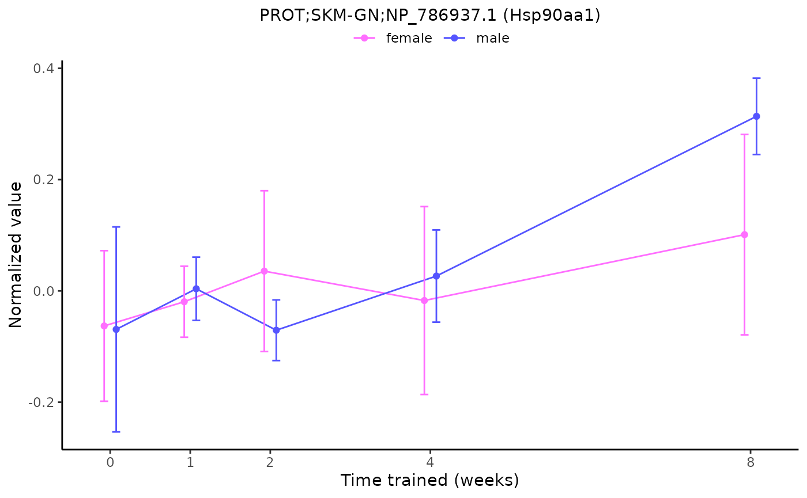
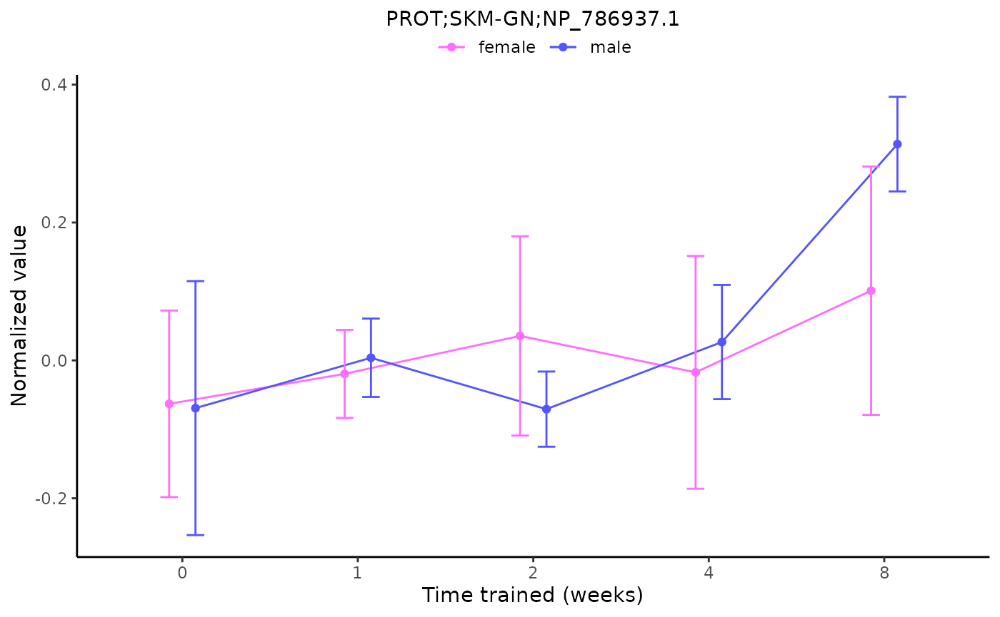
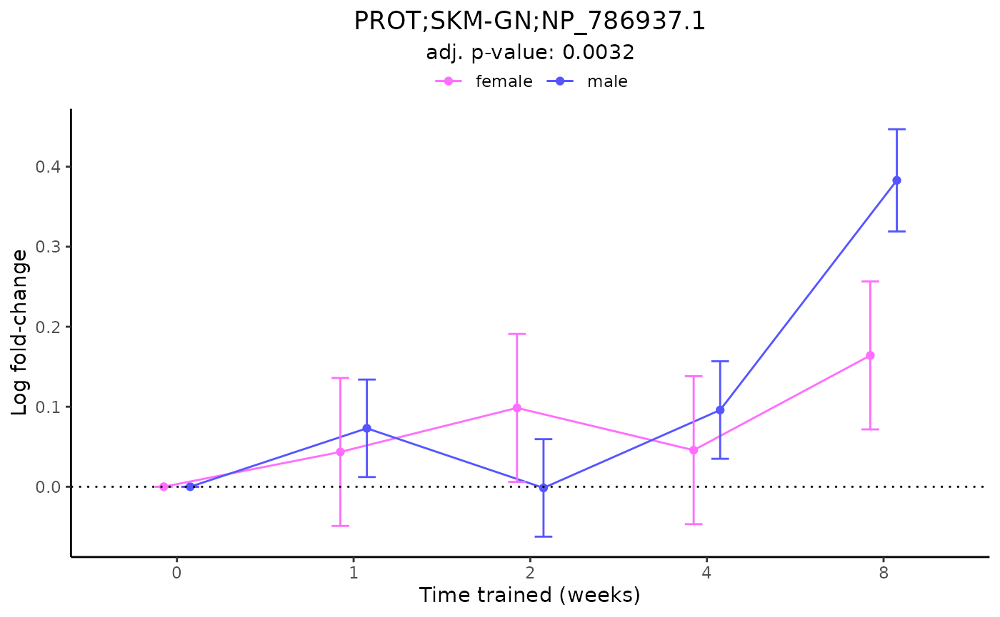

Tutorial for MotrpacRatTraining6mo R package
Source:vignettes/MotrpacRatTraining6mo.Rmd
MotrpacRatTraining6mo.RmdIntroduction
This vignette is under construction. If something is unclear or obviously missing, please submit an issue here.
About this package
This package provides functions to fetch, explore, and reproduce the processed data and downstream analysis results presented in the main paper for the first large-scale multi-omic multi-tissue endurance exercise training study conducted in young adult rats by the Molecular Transducers of Physical Activity Consortium (MoTrPAC). Find the preprint on bioRxiv. We highly recommend skimming the preprint before using this package as it provides important context and much greater detail than we can provide here.
While some of the functions in this package can be used by themselves, they were primarily written to analyze data in the MotrpacRatTraining6moData R package. See examples of how these data can be analyzed without this package in the MotrpacRatTraining6moData vignette.
About MoTrPAC
MoTrPAC is a national research consortium designed to discover and perform preliminary characterization of the range of molecular transducers (the “molecular map”) that underlie the effects of physical activity in humans. The program’s goal is to study the molecular changes that occur during and after exercise and ultimately to advance the understanding of how physical activity improves and preserves health. The six-year program is the largest targeted NIH investment of funds into the mechanisms of how physical activity improves health and prevents disease. See motrpac.org and motrpac-data.org for more details.
Setup
If you have not yet installed this R package, follow instructions here. Then load the library.
library(MotrpacRatTraining6mo)
#> Loading required package: MotrpacRatTraining6moDataAs of v1.5.0, attaching MotrpacRatTraining6mo also
attaches MotrpacRatTraining6moData,
so an additional library(MotrpacRatTraining6moData) command
is not necessary. For older versions of
MotrpacRatTraining6mo, attach MotrpacRatTraining6moData
directly. Attaching MotrpacRatTraining6moData
makes it easier to load and look up documentation for data objects in
the data package.
We will also load several suggested packages, which are required to run some of the examples in this vignette.
suggests = c("gprofiler2","IHW","FELLA","foreach","KEGGREST","repfdr")
need_to_install = c()
for (p in suggests){
if (!requireNamespace(p, quietly = TRUE)){
need_to_install = c(need_to_install,p)
}
}
if(length(need_to_install)>0){
stop(sprintf("The following packages must be installed to run examples in this vignette:\n %s",
paste(need_to_install, collapse=", ")))
}Note: Data objects from the MotrpacRatTraining6moData
package are indicated as variable names in all caps,
e.g. PHENO, TRNSCRPT_LIVER_RAW_COUNTS.
Tip: To learn more about any data object or
function, use ? to retrieve the documentation, e.g., ?METAB_FEATURE_ID_MAP,
?load_sample_data. Note that
MotrpacRatTraining6mo must be installed and loaded with
library() for this to work.
Study design
Details of the experimental design can be found in the supplementary methods of the bioRxiv preprint. Briefly, 6-month-old young adult rats were subjected to progressive endurance exercise training for 1, 2, 4, or 8 weeks, with tissues collected 48 hours after the last training bout. Sex-matched sedentary, untrained rats were used as controls. Whole blood, plasma, and 18 solid tissues were analyzed using genomics, proteomics, metabolomics, and protein immunoassay technologies, with most assays performed in a subset of these tissues. Depending on the assay, between 3 and 6 replicates per sex per time point were analyzed.
Tissue and assay abbreviations
It is important to be aware of the tissue and assay abbreviations
because they are used to name data objects and define arguments for many
functions. The vectors of abbreviations are also available in
TISSUE_ABBREV and ASSAY_ABBREV.
Tissues
-
ADRNL: adrenal gland
-
BAT: brown adipose tissue
-
BLOOD: whole blood
-
COLON: colon
-
CORTEX: cerebral cortex
-
HEART: heart
-
HIPPOC: hippocampus
-
HYPOTH: hypothalamus
-
KIDNEY: kidney
-
LIVER: liver
-
LUNG: lung
-
OVARY: ovaries (female gonads)
- PLASMA: plasma from blood
-
SKM-GN: gastrocnemius (leg skeletal muscle)
- SKM-VL: vastus lateralis (leg skeletal muscle)
-
SMLINT: small intestine
-
SPLEEN: spleen
-
TESTES: testes (male gonads)
-
VENACV: vena cava
- WAT-SC: subcutaneous white adipose tissue
Assays/omes
-
ACETYL: acetylproteomics; protein site
acetylation
-
ATAC: chromatin accessibility, ATAC-seq data
-
IMMUNO: multiplexed immunoassays (cytokines and
hormones)
-
METAB: metabolomics and lipidomics
-
METHYL: DNA methylation, RRBS data
-
PHOSPHO: phosphoproteomics; protein site
phosphorylation
-
PROT: global proteomics; protein abundance
-
TRNSCRPT: transcriptomics, RNA-Seq data
- UBIQ: ubiquitylome; protein site ubiquitination
Data in MotrpacRatTraining6moData
While some of the functions in this package can be used by themselves, they were primarily written to analyze data in the MotrpacRatTraining6moData R package.
Here is a brief summary of the kinds of data included in MotrpacRatTraining6moData:
- Assay, tissue, sex, and training group abbreviations, codes, colors, and order used in plots
- Phenotypic data,
PHENO - Mapping between various feature identifiers, i.e.,
FEATURE_TO_GENE,RAT_TO_HUMAN_GENE
- Ome-specific feature annotation, i.e.,
METAB_FEATURE_ID_MAP,METHYL_FEATURE_ANNOT(GCP only),ATAC_FEATURE_ANNOT(GCP only) - Ome-specific sample-level metadata, i.e.,
TRNSCRPT_META,ATAC_META,METHYL_META,IMMUNO_META,PHOSPHO_META,PROT_META,ACETYL_META,UBIQ_META
- Raw counts for RNA-Seq (TRNSCRPT), ATAC-Seq (ATAC), and RRBS
(METHYL) data, e.g.,
TRNSCRPT_LIVER_RAW_COUNTS. Note that epigenetic data (ATAC and METHYL) must be downloaded from Google Cloud Storage.
- Normalized sample-level data, e.g.,
TRNSCRPT_SKMGN_NORM_DATA
- Differential analysis results, e.g.,
HEART_PROT_DA(see more details below)
- Sample outliers excluded from differential analysis,
OUTLIERS
- Table of training-regulated features at 5% FDR,
TRAINING_REGULATED_FEATURES
- Bayesian graphical analysis inputs and results (see more details
below)
- Pathway enrichment of main graphical clusters,
GRAPH_PW_ENRICH
For more details about the MotrpacRatTraining6moData R package, see its vignette. The remainder of this vignette will focus on functions available in MotrpacRatTraining6mo.
MotrpacRatTraining6mo includes several functions to easily fetch and compile data from MotrpacRatTraining6moData.
Use load_sample_data() to load sample-level data for a
specific ome and tissue. Here we fetch various forms of the sample-level
RNA-Seq (TRNSCRPT) data for brown adipose tissue (BAT) as an
example.
# Load RNA-seq raw counts for brown adipose tissue
data = load_sample_data("BAT", "TRNSCRPT", normalized = FALSE)
# Load the normalized RNA-seq data for brown adipose tissue instead
data = load_sample_data("BAT", "TRNSCRPT")
# Load the normalized RNA-seq data for brown adipose tissue, but exclude sample outliers
data = load_sample_data("BAT", "TRNSCRPT", exclude_outliers = TRUE)
# Load the normalized RNA-seq data for brown adipose tissue for training-regulated features only
data = load_sample_data("BAT", "TRNSCRPT", training_regulated_only = TRUE)load_sample_data() will tell you if the specified
dataset doesn’t exist.
data = load_sample_data("VENACV", "PROT")
#> Warning in load_sample_data("VENACV", "PROT"): No data returned for tissue
#> VENACV and assay PROT with current arguments.load_sample_data() will also download epigenetic data
from Google Cloud Storage.
Note: Epigenetic data require substantially more memory than other omes.
# Load ATAC-seq raw counts for hippocampus, excluding outliers
data = load_sample_data("HIPPOC",
"ATAC",
exclude_outliers = TRUE,
normalized = FALSE,
scratchdir = "/tmp")We can plot the normalized sample-level data for a single feature
using plot_feature_normalized_data(). All of the following
examples are different ways to plot the same feature.
plot_feature_normalized_data(feature = "PROT;SKM-GN;NP_786937.1",
add_gene_symbol = TRUE)
plot_feature_normalized_data(assay = "PROT",
tissue = "SKM-GN",
feature_ID = "NP_786937.1",
exclude_outliers = TRUE,
scale_x_by_time = FALSE)
plot_feature_normalized_data(assay = "PROT",
tissue = "SKM-GN",
feature_ID = "NP_786937.1",
facet_by_sex = TRUE)combine_normalized_data() is a wrapper for
load_sample_data() that returns combined sample-level
normalized data for multiple datasets. Note that the sample-specific
vial labels used as column names for most of the sample-level data are
replaced with rat-specific participant IDs (PIDs) to allow measurements
from multiple datasets for the same animal to be concatenated.
# Return all normalized RNA-seq data
data = combine_normalized_data(assays = "TRNSCRPT")
# Return all normalized proteomics data. Exclude outliers
data = combine_normalized_data(assays = c("PROT","UBIQ","PHOSPHO","ACETYL"),
exclude_outliers = TRUE)
# Return normalized ATAC-seq data for training-regulated features
data = combine_normalized_data(assays = "ATAC",
training_regulated_only = TRUE)
# Return all non-epigenetic data
# Note that the "include_epigen" argument is FALSE by default
data = combine_normalized_data()Similarly, combine_da_results() concatenates
differential analysis results for multiple datasets.
# Return all non-epigenetic differential analysis results,
# including meta-regression results for metabolomics
res = combine_da_results()
# Return METHYL and ATAC differential analysis results for gastrocnemius
res = combine_da_results(tissues="SKM-GN",
assays=c("ATAC","METHYL"),
include_epigen=TRUE)transcript_prep_data() and atac_prep_data()
are functions used within the differential analysis functions for
TRNSCRPT and ATAC data. They collect the filtered raw counts, normalized
sample-level data, phenotypic data, and ome-specific sample metadata,
covariates, and outliers associated with a given tissue.
A few additional functions are provided to fetch epigenetic data from Google Cloud Storage:
-
load_methyl_raw_data(): Return the unfiltered raw
counts for a given tissue.
-
load_methyl_feature_annotation(): Return the METHYL
feature annotation file.
-
load_atac_feature_annotation(): Return the ATAC
feature annotation file.
-
get_rdata_from_url(): If you know the URL for a
specific RData file in GCS, you can use this function to return the
object using the
urlargument. Full URLs for all of the epigenetic data are available in the README for the MotrpacRatTraining6moData package.
Finally, list_available_data() returns a list of all of
the available data objects in the specified package.
list_available_data("MotrpacRatTraining6moData")
#> [1] "ACETYL_HEART_DA"
#> [2] "ACETYL_HEART_NORM_DATA"
#> [3] "ACETYL_LIVER_DA"
#> [4] "ACETYL_LIVER_NORM_DATA"
#> [5] "ACETYL_META"
#> [6] "ASSAY_ABBREV"
#> [7] "ASSAY_ABBREV_TO_CODE"
#> [8] "ASSAY_CODE_TO_ABBREV"
#> [9] "ASSAY_COLORS"
#> [10] "ASSAY_ORDER"
#> [11] "ATAC_BAT_NORM_DATA_05FDR"
#> [12] "ATAC_HEART_NORM_DATA_05FDR"
#> [13] "ATAC_HIPPOC_NORM_DATA_05FDR"
#> [14] "ATAC_KIDNEY_NORM_DATA_05FDR"
#> [15] "ATAC_LIVER_NORM_DATA_05FDR"
#> [16] "ATAC_LUNG_NORM_DATA_05FDR"
#> [17] "ATAC_META"
#> [18] "ATAC_SKMGN_NORM_DATA_05FDR"
#> [19] "ATAC_WATSC_NORM_DATA_05FDR"
#> [20] "FEATURE_TO_GENE"
#> [21] "FEATURE_TO_GENE_FILT"
#> [22] "GENE_UNIVERSES"
#> [23] "GRAPH_COMPONENTS"
#> [24] "GRAPH_PW_ENRICH"
#> [25] "GRAPH_STATES"
#> [26] "GROUP_COLORS"
#> [27] "IMMUNO_ADRNL_DA"
#> [28] "IMMUNO_BAT_DA"
#> [29] "IMMUNO_COLON_DA"
#> [30] "IMMUNO_CORTEX_DA"
#> [31] "IMMUNO_HEART_DA"
#> [32] "IMMUNO_HIPPOC_DA"
#> [33] "IMMUNO_KIDNEY_DA"
#> [34] "IMMUNO_LIVER_DA"
#> [35] "IMMUNO_LUNG_DA"
#> [36] "IMMUNO_META"
#> [37] "IMMUNO_NORM_DATA_FLAT"
#> [38] "IMMUNO_NORM_DATA_NESTED"
#> [39] "IMMUNO_OVARY_DA"
#> [40] "IMMUNO_PLASMA_DA"
#> [41] "IMMUNO_SKMGN_DA"
#> [42] "IMMUNO_SKMVL_DA"
#> [43] "IMMUNO_SMLINT_DA"
#> [44] "IMMUNO_SPLEEN_DA"
#> [45] "IMMUNO_TESTES_DA"
#> [46] "IMMUNO_WATSC_DA"
#> [47] "METAB_ADRNL_DA"
#> [48] "METAB_ADRNL_DA_METAREG"
#> [49] "METAB_BAT_DA"
#> [50] "METAB_BAT_DA_METAREG"
#> [51] "METAB_COLON_DA"
#> [52] "METAB_COLON_DA_METAREG"
#> [53] "METAB_CORTEX_DA"
#> [54] "METAB_CORTEX_DA_METAREG"
#> [55] "METAB_FEATURE_ID_MAP"
#> [56] "METAB_HEART_DA"
#> [57] "METAB_HEART_DA_METAREG"
#> [58] "METAB_HIPPOC_DA"
#> [59] "METAB_HIPPOC_DA_METAREG"
#> [60] "METAB_HYPOTH_DA"
#> [61] "METAB_HYPOTH_DA_METAREG"
#> [62] "METAB_KIDNEY_DA"
#> [63] "METAB_KIDNEY_DA_METAREG"
#> [64] "METAB_LIVER_DA"
#> [65] "METAB_LIVER_DA_METAREG"
#> [66] "METAB_LUNG_DA"
#> [67] "METAB_LUNG_DA_METAREG"
#> [68] "METAB_NORM_DATA_FLAT"
#> [69] "METAB_NORM_DATA_NESTED"
#> [70] "METAB_OVARY_DA"
#> [71] "METAB_OVARY_DA_METAREG"
#> [72] "METAB_PLASMA_DA"
#> [73] "METAB_PLASMA_DA_METAREG"
#> [74] "METAB_SKMGN_DA"
#> [75] "METAB_SKMGN_DA_METAREG"
#> [76] "METAB_SKMVL_DA"
#> [77] "METAB_SKMVL_DA_METAREG"
#> [78] "METAB_SMLINT_DA"
#> [79] "METAB_SMLINT_DA_METAREG"
#> [80] "METAB_SPLEEN_DA"
#> [81] "METAB_SPLEEN_DA_METAREG"
#> [82] "METAB_TESTES_DA"
#> [83] "METAB_TESTES_DA_METAREG"
#> [84] "METAB_VENACV_DA"
#> [85] "METAB_VENACV_DA_METAREG"
#> [86] "METAB_WATSC_DA"
#> [87] "METAB_WATSC_DA_METAREG"
#> [88] "METHYL_BAT_NORM_DATA_05FDR"
#> [89] "METHYL_HEART_NORM_DATA_05FDR"
#> [90] "METHYL_HIPPOC_NORM_DATA_05FDR"
#> [91] "METHYL_KIDNEY_NORM_DATA_05FDR"
#> [92] "METHYL_LIVER_NORM_DATA_05FDR"
#> [93] "METHYL_LUNG_NORM_DATA_05FDR"
#> [94] "METHYL_META"
#> [95] "METHYL_SKMGN_NORM_DATA_05FDR"
#> [96] "METHYL_WATSC_NORM_DATA_05FDR"
#> [97] "OUTLIERS"
#> [98] "PATHWAY_PARENTS"
#> [99] "PHENO"
#> [100] "PHOSPHO_CORTEX_DA"
#> [101] "PHOSPHO_CORTEX_NORM_DATA"
#> [102] "PHOSPHO_HEART_DA"
#> [103] "PHOSPHO_HEART_NORM_DATA"
#> [104] "PHOSPHO_KIDNEY_DA"
#> [105] "PHOSPHO_KIDNEY_NORM_DATA"
#> [106] "PHOSPHO_LIVER_DA"
#> [107] "PHOSPHO_LIVER_NORM_DATA"
#> [108] "PHOSPHO_LUNG_DA"
#> [109] "PHOSPHO_LUNG_NORM_DATA"
#> [110] "PHOSPHO_META"
#> [111] "PHOSPHO_SKMGN_DA"
#> [112] "PHOSPHO_SKMGN_NORM_DATA"
#> [113] "PHOSPHO_WATSC_DA"
#> [114] "PHOSPHO_WATSC_NORM_DATA"
#> [115] "PROT_CORTEX_DA"
#> [116] "PROT_CORTEX_NORM_DATA"
#> [117] "PROT_HEART_DA"
#> [118] "PROT_HEART_NORM_DATA"
#> [119] "PROT_KIDNEY_DA"
#> [120] "PROT_KIDNEY_NORM_DATA"
#> [121] "PROT_LIVER_DA"
#> [122] "PROT_LIVER_NORM_DATA"
#> [123] "PROT_LUNG_DA"
#> [124] "PROT_LUNG_NORM_DATA"
#> [125] "PROT_META"
#> [126] "PROT_SKMGN_DA"
#> [127] "PROT_SKMGN_NORM_DATA"
#> [128] "PROT_WATSC_DA"
#> [129] "PROT_WATSC_NORM_DATA"
#> [130] "RAT_TO_HUMAN_GENE"
#> [131] "RAT_TO_HUMAN_PHOSPHO"
#> [132] "REPEATED_FEATURES"
#> [133] "REPFDR_INPUTS"
#> [134] "REPFDR_RES"
#> [135] "SEX_COLORS"
#> [136] "TISSUE_ABBREV"
#> [137] "TISSUE_ABBREV_TO_CODE"
#> [138] "TISSUE_CODE_TO_ABBREV"
#> [139] "TISSUE_COLORS"
#> [140] "TISSUE_ORDER"
#> [141] "TRAINING_REGULATED_FEATURES"
#> [142] "TRAINING_REGULATED_NORM_DATA"
#> [143] "TRAINING_REGULATED_NORM_DATA_NO_OUTLIERS"
#> [144] "TRNSCRPT_ADRNL_DA"
#> [145] "TRNSCRPT_ADRNL_NORM_DATA"
#> [146] "TRNSCRPT_ADRNL_RAW_COUNTS"
#> [147] "TRNSCRPT_BAT_DA"
#> [148] "TRNSCRPT_BAT_NORM_DATA"
#> [149] "TRNSCRPT_BAT_RAW_COUNTS"
#> [150] "TRNSCRPT_BLOOD_DA"
#> [151] "TRNSCRPT_BLOOD_NORM_DATA"
#> [152] "TRNSCRPT_BLOOD_RAW_COUNTS"
#> [153] "TRNSCRPT_COLON_DA"
#> [154] "TRNSCRPT_COLON_NORM_DATA"
#> [155] "TRNSCRPT_COLON_RAW_COUNTS"
#> [156] "TRNSCRPT_CORTEX_DA"
#> [157] "TRNSCRPT_CORTEX_NORM_DATA"
#> [158] "TRNSCRPT_CORTEX_RAW_COUNTS"
#> [159] "TRNSCRPT_HEART_DA"
#> [160] "TRNSCRPT_HEART_NORM_DATA"
#> [161] "TRNSCRPT_HEART_RAW_COUNTS"
#> [162] "TRNSCRPT_HIPPOC_DA"
#> [163] "TRNSCRPT_HIPPOC_NORM_DATA"
#> [164] "TRNSCRPT_HIPPOC_RAW_COUNTS"
#> [165] "TRNSCRPT_HYPOTH_DA"
#> [166] "TRNSCRPT_HYPOTH_NORM_DATA"
#> [167] "TRNSCRPT_HYPOTH_RAW_COUNTS"
#> [168] "TRNSCRPT_KIDNEY_DA"
#> [169] "TRNSCRPT_KIDNEY_NORM_DATA"
#> [170] "TRNSCRPT_KIDNEY_RAW_COUNTS"
#> [171] "TRNSCRPT_LIVER_DA"
#> [172] "TRNSCRPT_LIVER_NORM_DATA"
#> [173] "TRNSCRPT_LIVER_RAW_COUNTS"
#> [174] "TRNSCRPT_LUNG_DA"
#> [175] "TRNSCRPT_LUNG_NORM_DATA"
#> [176] "TRNSCRPT_LUNG_RAW_COUNTS"
#> [177] "TRNSCRPT_META"
#> [178] "TRNSCRPT_OVARY_DA"
#> [179] "TRNSCRPT_OVARY_NORM_DATA"
#> [180] "TRNSCRPT_OVARY_RAW_COUNTS"
#> [181] "TRNSCRPT_SKMGN_DA"
#> [182] "TRNSCRPT_SKMGN_NORM_DATA"
#> [183] "TRNSCRPT_SKMGN_RAW_COUNTS"
#> [184] "TRNSCRPT_SKMVL_DA"
#> [185] "TRNSCRPT_SKMVL_NORM_DATA"
#> [186] "TRNSCRPT_SKMVL_RAW_COUNTS"
#> [187] "TRNSCRPT_SMLINT_DA"
#> [188] "TRNSCRPT_SMLINT_NORM_DATA"
#> [189] "TRNSCRPT_SMLINT_RAW_COUNTS"
#> [190] "TRNSCRPT_SPLEEN_DA"
#> [191] "TRNSCRPT_SPLEEN_NORM_DATA"
#> [192] "TRNSCRPT_SPLEEN_RAW_COUNTS"
#> [193] "TRNSCRPT_TESTES_DA"
#> [194] "TRNSCRPT_TESTES_NORM_DATA"
#> [195] "TRNSCRPT_TESTES_RAW_COUNTS"
#> [196] "TRNSCRPT_VENACV_DA"
#> [197] "TRNSCRPT_VENACV_NORM_DATA"
#> [198] "TRNSCRPT_VENACV_RAW_COUNTS"
#> [199] "TRNSCRPT_WATSC_DA"
#> [200] "TRNSCRPT_WATSC_NORM_DATA"
#> [201] "TRNSCRPT_WATSC_RAW_COUNTS"
#> [202] "UBIQ_HEART_DA"
#> [203] "UBIQ_HEART_NORM_DATA"
#> [204] "UBIQ_LIVER_DA"
#> [205] "UBIQ_LIVER_NORM_DATA"
#> [206] "UBIQ_META"If the MotrpacRatTraining6moData
library is attached, you can learn more about any of these data objects
with ?, e.g., ?TISSUE_COLORS,
and you can load data objects into your environment using
data(), e.g.,
data(TRAINING_REGULATED_FEATURES).
Differential analysis
More details about the differential analysis methods are available in the supplementary methods of the bioRxiv preprint. Simply put, the training differential analysis considers all training groups for each sex (sedentary controls and 4 training time points) to determine if the analyte significantly changes in either sex at any point during the training time course. The adjusted p-values from this analysis were used to determine the set of analytes that are regulated by endurance exercise training at 5% FDR, referred to as the training-regulated features. The timewise differential analysis performs pairwise contrasts between trained animals at each time point (1, 2, 4, or 8 weeks) and the sex-matched sedentary control animals. This gives us sex- and time- specific p-values and effect sizes, referred to as the timewise summary statistics.
We provide the following functions to replicate our timewise
and training differential analysis results for each dataset.
Look at the corresponding documentation for each function for more
details, e.g. ?transcript_timewise_da.
- Proteomics (ACETYL, PHOSPHO, PROT, UBIQ)
- ATAC
- IMMUNO
- METAB
- METHYL
- TRNSCRPT
Here, we replicate the protein acetylation timewise differential analysis results provided in MotrpacRatTraining6moData.
timewiseList = list()
for (tissue in c("HEART","LIVER")){
timewiseList[[tissue]] = proteomics_timewise_da("ACETYL", tissue)
}
#> ACETYL_HEART_NORM_DATA
#> Warning: Partial NA coefficients for 157 probe(s)
#> ACETYL_LIVER_NORM_DATA
#> Warning: Partial NA coefficients for 355 probe(s)
timewise = do.call("rbind", timewiseList)
# merge with version of results in MotrpacRatTraining6moData
original = combine_da_results(assays="ACETYL")
#> ACETYL_HEART_DA
#> ACETYL_LIVER_DA
merged = merge(original, timewise,
by=c("feature_ID","assay","assay_code","tissue","tissue_code","sex","comparison_group"),
suffixes=c("_orginal","_reproduced"))
# plot
plot(-log10(merged$p_value_orginal),
-log10(merged$p_value_reproduced),
type="p", cex=0.5,
xlab="Original timewise p-value (-log10)",
ylab="Reproduced timewise p-value (-log10)",
main="Timewise DA results for ACETYL data")
We can plot the differential analysis results for a single feature
using plot_feature_logfc(). All of the following examples
are different ways to plot results for the same feature.
plot_feature_logfc(feature = "PROT;SKM-GN;NP_786937.1",
add_gene_symbol = TRUE)
plot_feature_logfc(assay = "PROT",
tissue = "SKM-GN",
feature_ID = "NP_786937.1",
scale_x_by_time = FALSE)
plot_feature_logfc(assay = "PROT",
tissue = "SKM-GN",
feature_ID = "NP_786937.1",
facet_by_sex = TRUE,
add_adj_p = FALSE)Bayesian graphical clustering
Summary
After performing differential analysis between trained animals and sedentary control animals to identify training-regulated features across datasets, we wanted to characterize groups of these features that had similar trajectories over the training time course and compare them within and between tissues.
To do this, we clustered the 34,244 training-regulated features with complete timewise summary statistics (that is, from all four training time points in both sexes) using their timewise z-scores with the expectation-maximization (EM) clustering algorithm of repfdr. This algorithm assumes that each timewise z-score can take one of three latent states: -1 for down-regulation, 1 for up-regulation, and 0 for null (i.e., unchanged relative to the sedentary control group). The algorithm computes the posterior probabilities for each combination of states (-1/down, 1/up, or 0/null) over all experimental groups (8 groups: 1-, 2-, 4-, and 8-week time points in females and males). We used these posterior probabilities to effectively assign continuous z-scores to simplified states. For example, a feature with the following z-scores would be assigned to the corresponding states with high probability:
| Female 1w | Male 1w | Female 2w | Male 2w | Female 4w | Male 4w | Female 8w | Male 8w | |
|---|---|---|---|---|---|---|---|---|
| z-score | -0.2 | 0.1 | 0.85 | -0.05 | 0.09 | 6.7 | 0.21 | 5 |
| state | 0 | 0 | 0 | 0 | 0 | 1 | 0 | 1 |
We then combine the male and female states for a given time point using the following notation:
| 1 week | 2 weeks | 4 weeks | 8 weeks | |
|---|---|---|---|---|
| notation | 1w_F0_M0 |
2w_F0_M0 |
4w_F0_M1 |
8w_F0_M1 |
Descriptively, this feature is null in both sexes
(F0_M0) at 1 week (1w) and 2 weeks
(2w) of training and up-regulated in males only
(F0_M1) at 4 and 8 weeks of training.
One major advantage of this approach is that we can use the time
points and discrete states to construct a graph, where each point (or
“node”) in the graph represents a state at a given time point (e.g.,
1w_F-1_M0). Then for each feature of interest, we can draw
a path through the graph to represent its trajectory over the training
time course. We can use the paths and nodes in the graph to define
clusters of features with similar temporal behavior and characterize the
underlying biology.
For example, we can represent the complete path of the above feature
over the training time course as follows:
1w_F0_M0->2w_F0_M0->4w_F0_M1->8w_F0_M1. This path
is made by connecting the 1w_F0_M0 node to the
2w_F0_M0 node to the 4w_F0_M1 node to the
8w_F0_M1 node. The connection between a single pair of
consecutive nodes is called an edge. For example, the
2w_F0_M0---4w_F0_M1 edge represents features that are null
in both sexes after 2 weeks of training but are up-regulated in males
after 4 weeks of training. The
1w_F0_M0->2w_F0_M0->4w_F0_M1->8w_F0_M1 path is
constructed from 3 edges, each represented by -> in the
notation.
The figure below provides toy examples of four features to
demonstrate their graphical representation. Feature f2
(green) is the same trajectory described above.
![A. A schematic example of the graphical representation of the differential analysis results. Top left: the z-scores of four features. A positive score corresponds to up-regulation (red), and a negative score corresponds to down regulation (blue). Bottom left: the assignment of features to node sets and full path sets (edge sets are not shown for conciseness but can be easily inferred from the full paths). Node labels follow the [time]_F[x]_M[y] format where [time] shows the animal sacrifice week and can take one of (1w, 2w, 4w, or 8w), and [x] and [y] are one of (-1,0,1), corresponding to down-regulation, no effect, and up-regulation, respectively. Right: the graphical representation of the feature sets. Columns are training time points, and rows are the differential abundance states. Node and edge sizes are proportional to the number of features that are assigned to each set.](graph_explanation.png)
A. A schematic example of the graphical representation of the differential analysis results. Top left: the z-scores of four features. A positive score corresponds to up-regulation (red), and a negative score corresponds to down regulation (blue). Bottom left: the assignment of features to node sets and full path sets (edge sets are not shown for conciseness but can be easily inferred from the full paths). Node labels follow the [time]_F[x]_M[y] format where [time] shows the animal sacrifice week and can take one of (1w, 2w, 4w, or 8w), and [x] and [y] are one of (-1,0,1), corresponding to down-regulation, no effect, and up-regulation, respectively. Right: the graphical representation of the feature sets. Columns are training time points, and rows are the differential abundance states. Node and edge sizes are proportional to the number of features that are assigned to each set.
We herein refer to our approach of using repfdr to
construct a graph of the dynamic multi-omic responses to endurance
exercise training across tissues as graphical clustering. The
following sections describe how to reproduce our graphical clustering
analysis, run repfdr on your own data, and explore and
visualize the nodes, edges, and paths (collectively referred to as
clusters) in the resulting graph. For additional details and advantages
of this approach over traditional clustering methods, see the supplementary
methods of the bioRxiv preprint. If you are more interested in
exploring the existing pathway enrichment results, skip to Visualization of pathway enrichment results.
(Re-)run repfdr to determine states
REPFDR_INPUTS provides the inputs for our analysis with
repfdr, which can be replicated with
bayesian_graphical_clustering() as shown below. The raw
repfdr results are provided in REPFDR_RES.
data(REPFDR_INPUTS)
zscores = REPFDR_INPUTS$zs_smoothed
res = bayesian_graphical_clustering(zscores)bayesian_graphical_clustering() is a study-specific
wrapper for repfdr_wrapper(). repfdr_wrapper()
can be used to analyze any set of z-scores. Here we show an example with
simulated data.
# load required library for this function
library(repfdr)
# Simulate data with a single null cluster
# Toy experiment with 8 groups
zcolnames = paste("Exp", 1:8)
zscores = matrix(rnorm(80000),ncol=8,dimnames = list(1:10000,zcolnames))
# Add a cluster with a strong signal,
# i.e. assign a z-score of ~5 to the first 4 groups for the first 500 features
zscores[1:500,1:4] = zscores[1:500,1:4] + 5
# Run the repfdr wrapper
repfdr_results = repfdr_wrapper(zscores, df=10)
#> EM iteration 2
#> Converged after 1 EM iterations.EM iteration 2
#> Converged after 1 EM iterations.EM iteration 2
#> Converged after 1 EM iterations.EM iteration 2
#> Converged after 1 EM iterations.EM iteration 2
#> Converged after 1 EM iterations.EM iteration 2
#> Converged after 1 EM iterations.EM iteration 2
#> Converged after 1 EM iterations.EM iteration 2
#> EM iteration 3
#> EM iteration 4
#> EM iteration 5
#> EM iteration 6
#> EM iteration 7
#> EM iteration 8
#> EM iteration 9
#> EM iteration 10
#> EM iteration 11
#> EM iteration 12
#> EM iteration 13
#> EM iteration 14
#> EM iteration 15
#> EM iteration 16
#> EM iteration 17
#> EM iteration 18
#> EM iteration 19
#> EM iteration 20
#> EM iteration 21
#> EM iteration 22
#> EM iteration 23
#> EM iteration 24
#> EM iteration 25
#> EM iteration 26
#> EM iteration 27
#> EM iteration 28
#> EM iteration 29
#> EM iteration 30
#> EM iteration 31
#> EM iteration 32
#> EM iteration 33
#> EM iteration 34
#> EM iteration 35
#> EM iteration 36
#> EM iteration 37
#> EM iteration 38
#> EM iteration 39
#> EM iteration 40
#> EM iteration 41
#> EM iteration 42
#> EM iteration 43
#> EM iteration 44
#> EM iteration 45
#> EM iteration 46
#> EM iteration 47
#> EM iteration 48
#> EM iteration 49
#> EM iteration 50
#> EM iteration 51
#> EM iteration 52
#> EM iteration 53
#> EM iteration 54
#> EM iteration 55
#> EM iteration 56
#> EM iteration 57
#> EM iteration 58
#> EM iteration 59
#> EM iteration 60
#> EM iteration 61
#> EM iteration 62
#> EM iteration 63
#> EM iteration 64
#> EM iteration 65
#> EM iteration 66
#> EM iteration 67
#> EM iteration 68
#> EM iteration 69
#> EM iteration 70
#> EM iteration 71
#> EM iteration 72
#> EM iteration 73
#> EM iteration 74
#> EM iteration 75
#> EM iteration 76
#> EM iteration 77
#> EM iteration 78
#> EM iteration 79
#> EM iteration 80
#> EM iteration 81
#> EM iteration 82
#> EM iteration 83
#> EM iteration 84
#> EM iteration 85
#> EM iteration 86
#> Converged after 85 EM iterations.
# Now we expect the first 500 features to belong to cluster 11110000 (up-regulated in the first 4 groups)
# and the remaining 9500 to belong to cluster 00000000 (null in all groups)
hist(repfdr_results$repfdr_cluster_posteriors[,"00000000"],
breaks=20,
main="Posterior probability of null cluster for all features")
hist(repfdr_results$repfdr_cluster_posteriors[1:500,"11110000"],
breaks=20,
main="Posterior probability of 11110000 cluster for first 500 features")Explore graphical clustering results
The graph representation of the repfdr results are
provided in GRAPH_COMPONENTS (node and edge lists) and
GRAPH_STATES (data frame representation).
data(GRAPH_STATES)
head(GRAPH_STATES)
#> feature ome
#> ACETYL;HEART;NP_001003673.1_K477k ACETYL;HEART;NP_001003673.1_K477k ACETYL
#> ACETYL;HEART;NP_001004072.2_K77k ACETYL;HEART;NP_001004072.2_K77k ACETYL
#> ACETYL;HEART;NP_001004072.2_K83k ACETYL;HEART;NP_001004072.2_K83k ACETYL
#> ACETYL;HEART;NP_001004085.1_K186k ACETYL;HEART;NP_001004085.1_K186k ACETYL
#> ACETYL;HEART;NP_001004085.1_K261k ACETYL;HEART;NP_001004085.1_K261k ACETYL
#> ACETYL;HEART;NP_001004085.1_K268k ACETYL;HEART;NP_001004085.1_K268k ACETYL
#> tissue feature_ID state_1w state_2w
#> ACETYL;HEART;NP_001003673.1_K477k HEART NP_001003673.1_K477k F0_M0 F0_M0
#> ACETYL;HEART;NP_001004072.2_K77k HEART NP_001004072.2_K77k F0_M0 F0_M0
#> ACETYL;HEART;NP_001004072.2_K83k HEART NP_001004072.2_K83k F-1_M-1 F-1_M-1
#> ACETYL;HEART;NP_001004085.1_K186k HEART NP_001004085.1_K186k F0_M1 F0_M1
#> ACETYL;HEART;NP_001004085.1_K261k HEART NP_001004085.1_K261k F0_M1 F0_M1
#> ACETYL;HEART;NP_001004085.1_K268k HEART NP_001004085.1_K268k F0_M1 F0_M1
#> state_4w state_8w
#> ACETYL;HEART;NP_001003673.1_K477k F0_M0 F-1_M-1
#> ACETYL;HEART;NP_001004072.2_K77k F1_M0 F1_M0
#> ACETYL;HEART;NP_001004072.2_K83k F0_M-1 F0_M0
#> ACETYL;HEART;NP_001004085.1_K186k F0_M0 F0_M-1
#> ACETYL;HEART;NP_001004085.1_K261k F0_M0 F0_M-1
#> ACETYL;HEART;NP_001004085.1_K268k F0_M0 F0_M-1
#> path
#> ACETYL;HEART;NP_001003673.1_K477k 1w_F0_M0->2w_F0_M0->4w_F0_M0->8w_F-1_M-1
#> ACETYL;HEART;NP_001004072.2_K77k 1w_F0_M0->2w_F0_M0->4w_F1_M0->8w_F1_M0
#> ACETYL;HEART;NP_001004072.2_K83k 1w_F-1_M-1->2w_F-1_M-1->4w_F0_M-1->8w_F0_M0
#> ACETYL;HEART;NP_001004085.1_K186k 1w_F0_M1->2w_F0_M1->4w_F0_M0->8w_F0_M-1
#> ACETYL;HEART;NP_001004085.1_K261k 1w_F0_M1->2w_F0_M1->4w_F0_M0->8w_F0_M-1
#> ACETYL;HEART;NP_001004085.1_K268k 1w_F0_M1->2w_F0_M1->4w_F0_M0->8w_F0_M-1
#> tissue_path
#> ACETYL;HEART;NP_001003673.1_K477k HEART:1w_F0_M0->2w_F0_M0->4w_F0_M0->8w_F-1_M-1
#> ACETYL;HEART;NP_001004072.2_K77k HEART:1w_F0_M0->2w_F0_M0->4w_F1_M0->8w_F1_M0
#> ACETYL;HEART;NP_001004072.2_K83k HEART:1w_F-1_M-1->2w_F-1_M-1->4w_F0_M-1->8w_F0_M0
#> ACETYL;HEART;NP_001004085.1_K186k HEART:1w_F0_M1->2w_F0_M1->4w_F0_M0->8w_F0_M-1
#> ACETYL;HEART;NP_001004085.1_K261k HEART:1w_F0_M1->2w_F0_M1->4w_F0_M0->8w_F0_M-1
#> ACETYL;HEART;NP_001004085.1_K268k HEART:1w_F0_M1->2w_F0_M1->4w_F0_M0->8w_F0_M-1Note: Features are specified in the format “[ASSAY_ABBREV];[TISSUE_ABBREV];[feature_ID]”, e.g. “PHOSPHO;SKM-GN;NP_001006973.1_S34s”, “METAB;SKM-GN;1-methylnicotinamide”
We can extract node, edge, and path feature sets from a given tissue
using extract_tissue_sets(). Here we extract
training-regulated features in the three (k=3) largest
nodes, edges, and paths in the gastrocnemius
(tissues="SKM-GN") that have at least 20 features
(min_size=20). We also add the feature lists for all 8-week
nodes (add_week8=TRUE), which are generally of interest
because the 8-week time point represents the final trained state.
gastroc_sets = extract_tissue_sets(tissues="SKM-GN",
k=3,
min_size=20,
add_week8=TRUE)
names(gastroc_sets)
#> [1] "8w_F1_M1"
#> [2] "8w_F-1_M-1"
#> [3] "4w_F1_M1"
#> [4] "8w_F-1_M0"
#> [5] "8w_F0_M-1"
#> [6] "8w_F0_M0"
#> [7] "8w_F0_M1"
#> [8] "8w_F1_M0"
#> [9] "4w_F1_M1---8w_F1_M1"
#> [10] "1w_F0_M0---2w_F0_M0"
#> [11] "4w_F-1_M-1---8w_F-1_M-1"
#> [12] "1w_F1_M1->2w_F1_M1->4w_F1_M1->8w_F1_M1"
#> [13] "1w_F-1_M-1->2w_F-1_M-1->4w_F-1_M-1->8w_F-1_M-1"
#> [14] "1w_F0_M1->2w_F0_M1->4w_F1_M1->8w_F1_M1"
# look at the list of features in the "1w_F1_M1->2w_F1_M1->4w_F1_M1->8w_F1_M1" path
head(gastroc_sets$`1w_F1_M1->2w_F1_M1->4w_F1_M1->8w_F1_M1`)
#> [1] "ATAC;SKM-GN;chr15:101579022-101579761"
#> [2] "ATAC;SKM-GN;chr1:221194280-221195125"
#> [3] "ATAC;SKM-GN;chr1:221199295-221200124"
#> [4] "ATAC;SKM-GN;chr20:34579127-34579734"
#> [5] "ATAC;SKM-GN;chr5:114013062-114014681"
#> [6] "ATAC;SKM-GN;chrX:119151643-119154560"get_all_trajectories() returns all non-empty
paths in the results.
paths = get_all_trajectories()
head(names(paths))
#> [1] "1w_F-1_M1->2w_F-1_M0->4w_F-1_M0->8w_F-1_M0"
#> [2] "1w_F0_M1->2w_F0_M1->4w_F0_M1->8w_F1_M1"
#> [3] "1w_F1_M1->2w_F1_M1->4w_F1_M1->8w_F1_M1"
#> [4] "1w_F0_M0->2w_F0_M0->4w_F0_M0->8w_F1_M1"
#> [5] "1w_F0_M0->2w_F0_M0->4w_F0_M0->8w_F-1_M-1"
#> [6] "1w_F0_M1->2w_F0_M1->4w_F0_M1->8w_F0_M1"
hist(unlist(lapply(paths, length)), breaks=100)
extract_main_clusters() returns the subset of graphical
clusters for which pathway enrichment was performed for the preprint,
namely the 2 largest nodes, 2 largest edges, 10 largest non-null paths,
and all 8-week nodes from the graphical representation of
training-regulated features in each tissue.
clusters = extract_main_clusters()To extract the training-regulated features associated with a specific
graphical cluster, tissue, ome, etc., we can subset
GRAPH_STATES.
data(GRAPH_STATES)
# if you want features in this path in LUNG:
clust = "LUNG:1w_F1_M-1->2w_F1_M-1->4w_F0_M-1->8w_F-1_M-1"
features_of_interest = stats::na.omit(GRAPH_STATES$feature[GRAPH_STATES$tissue_path == clust])
as.vector(features_of_interest)
#> [1] "PHOSPHO;LUNG;NP_001012023.1_S447s"
#> [2] "PHOSPHO;LUNG;NP_001013238.2_S1594s"
#> [3] "PHOSPHO;LUNG;NP_001020859.1_S486sS489s"
#> [4] "PHOSPHO;LUNG;NP_001028859.1_S133s"
#> [5] "PHOSPHO;LUNG;NP_001099225.2_S621s"
#> [6] "PHOSPHO;LUNG;NP_001099344.2_S1816s"
#> [7] "PHOSPHO;LUNG;NP_001164067.1_T456t"
#> [8] "PHOSPHO;LUNG;NP_001178760.1_S542s"
#> [9] "PHOSPHO;LUNG;NP_001178775.1_S270s"
#> [10] "PHOSPHO;LUNG;NP_001178880.1_S5423s"
#> [11] "PHOSPHO;LUNG;NP_036849.1_T422t"
#> [12] "PHOSPHO;LUNG;NP_037349.1_S512s"
#> [13] "PHOSPHO;LUNG;NP_058862.1_S63s"
#> [14] "PHOSPHO;LUNG;NP_647546.1_S288s"
#> [15] "PHOSPHO;LUNG;NP_665709.2_S702s"
#> [16] "PHOSPHO;LUNG;XP_001058477.1_S2558s"
#> [17] "PHOSPHO;LUNG;XP_002726994.2_S307s"
#> [18] "PHOSPHO;LUNG;XP_003752547.1_S411s"
#> [19] "PHOSPHO;LUNG;XP_003752548.1_S411s"
#> [20] "PHOSPHO;LUNG;XP_003754609.1_S1206s"
#> [21] "PHOSPHO;LUNG;XP_006226323.1_Y618y"
#> [22] "PHOSPHO;LUNG;XP_006235089.1_S434s"
#> [23] "PHOSPHO;LUNG;XP_008766933.1_S1807s"
#> [24] "PHOSPHO;LUNG;XP_017443701.1_S938s"
#> [25] "PHOSPHO;LUNG;XP_017444244.1_S5362s"
#> [26] "PHOSPHO;LUNG;XP_017454714.1_S1250s"
#> [27] "PHOSPHO;LUNG;XP_017454716.1_S1225s"
#> [28] "PHOSPHO;LUNG;XP_017457486.1_S406s"
#> [29] "PHOSPHO;LUNG;XP_017457774.1_S758s"
#> [30] "PROT;LUNG;XP_003750594.1"
# if you want features in this path in multiple tissues:
clust = "1w_F1_M1->2w_F1_M1->4w_F1_M1->8w_F1_M1"
tissues = c("HEART","SKM-GN","SKM-VL")
features_of_interest = stats::na.omit(GRAPH_STATES$feature[GRAPH_STATES$path == clust & GRAPH_STATES$tissue %in% tissues])
length(features_of_interest)
#> [1] 685
# look at a table of omes and tissues represented
tissues = sapply(features_of_interest, function(x){
unname(unlist(strsplit(x, ";")))[2]
})
omes = sapply(features_of_interest, function(x){
unname(unlist(strsplit(x, ";")))[1]
})
table(tissues, omes)
#> omes
#> tissues ACETYL ATAC METAB PHOSPHO PROT TRNSCRPT UBIQ
#> HEART 50 0 35 52 108 110 2
#> SKM-GN 0 6 14 55 130 44 0
#> SKM-VL 0 0 2 0 0 77 0Plot graph of differential features
We can use get_tree_plot_for_tissue() to draw the
graphical representation of a given set of training-regulated
features.
First, let’s look at the graph of all differential features in the
liver. The sizes of the edges and nodes are proportional to the number
of training-regulated features that were assigned to the corresponding
states. Nodes are arranged in rows by states (e.g., “F only up”) and in
columns by training time points. The node at the intersection of “F only
up” and “week 1” represents features that are null in males and
up-regulated in females after one week of endurance exercise training
(i.e., 1w_F1_M0 in the notation above).
get_tree_plot_for_tissue(
tissues=c("LIVER"),
min_size = 1
)
#> Using "sugiyama" as default layout
This is messy, so let’s look at just the 5 largest paths instead.
get_tree_plot_for_tissue(
tissues=c("LIVER"),
max_trajectories = 5
)
#> Using "sugiyama" as default layout
Further, let’s split these edges by data type (assay/ome) to see what features are represented. We can change the curvature and alpha range to make the edges easier to see.
get_tree_plot_for_tissue(
tissues=c("LIVER"),
max_trajectories = 5,
parallel_edges_by_ome = TRUE,
curvature = 0.5,
edge_alpha_range = c(0.5,1)
)
#> Using "sugiyama" as default layout
This is too busy with edges split by ome. Let’s look at just the largest path and only RNA-Seq and proteomics assays.
get_tree_plot_for_tissue(
omes=c("PROT","ACETYL","UBIQ","PHOSPHO","TRNSCRPT"),
tissues=c("LIVER"),
max_trajectories = 1,
parallel_edges_by_ome = TRUE,
curvature = 0.8,
edge_alpha_range = c(0.5,1)
)
#> Using "sugiyama" as default layout
From this plot, we can see that most of the differential features that follow this path in the liver are protein acetlysites. This path represents features that are up-regulated only in males (“M only up”) through the first four weeks of training and then in both males and females by eight weeks of training (“Both up”).
We can also look at multi-tissue graphs. For example, let’s look at the three largest paths of training-regulated transcripts in the three muscle tissues. Now instead of splitting edges by ome, we can split them by tissue.
get_tree_plot_for_tissue(
tissues=c("SKM-GN","HEART","SKM-VL"),
omes="TRNSCRPT",
parallel_edges_by_tissue = TRUE,
max_trajectories = 3,
edge_alpha_range = c(0.5,1),
curvature = 0.6
)
#> Using "sugiyama" as default layout
From this plot, we can see that a large number of training-regulated transcripts are up-regulated in both sexes at all four training time points in all three muscle tissues. Perhaps some interesting shared biology is represented in muscle features that follow this path.
To visualize the representation of features from different tissues
and/or omes for a given set of clusters, we can also use
plot_features_per_cluster(). Here, we’ll consider the 10
largest paths of training-regulated features in the gastrocnemius (lower
leg skeletal muscle).
# Get top 10 largest paths, nodes, edges in gastrocnemius
# Exclude additional 8-week nodes
clusters = extract_tissue_sets("SKM-GN", k=10, add_week8=FALSE)
# Select paths only
clusters = clusters[grepl("->", names(clusters))]
# Plot distribution of features
plot_features_per_cluster(clusters)From this plot, we see that the majority of training-regulated
features in the gastrocnemius that are up-regulated in both sexes at all
training time points
(1w_F1_M1->2w_F1_M1->4w_F1_M1->8w_F1_M1, top row)
are proteins, followed by protein phosphosites. We can plot the
sample-level trajectories of all features in this cluster with
plot_feature_trajectories().
plot_feature_trajectories(clusters$`1w_F1_M1->2w_F1_M1->4w_F1_M1->8w_F1_M1`,
title="Features consistently up-regulated in gastroc")We also see a cluster comprised mostly of protein phosphosites, where
these features are down-regulated in females at all training time points
and also down-regulated in males at 8 weeks of training
(1w_F-1_M0->2w_F-1_M0->4w_F-1_M0->8w_F-1_M-1).
plot_feature_trajectories(clusters$`1w_F-1_M0->2w_F-1_M0->4w_F-1_M0->8w_F-1_M-1`,
title="Cluster of mostly PHOSPHO in gastroc")
In the next section, we show how pathway enrichment can be used to begin interpreting the biology underlying a graphical cluster (node, edge, or path) of interest.
Pathway enrichment of clusters
One important tool we used to interpret the biology underlying graphical clusters was pathway enrichment. In this section, we describe functions provided in this package to reproduce our pathway enrichment analysis or run your own. If you are more interested in exploring the existing pathway enrichment results, skip to Visualization of pathway enrichment results.
Approach
We performed pathway enrichment for the 2 largest nodes, 2 largest
edges, 10 largest non-null paths, and all 8-week nodes from the
graphical representation of training-regulated features in each tissue.
This set of graphical clusters can be extracted using
extract_main_clusters().
For each tissue-specific cluster, we performed pathway enrichment
separately for the features corresponding to each ome. For gene-centric
omes, i.e., all but metabolomics, we mapped features to genes and
queried KEGG and
REACTOME
pathways using gprofiler2. For
metabolomics, we mapped metabolites to KEGG IDs and used FELLA
to query KEGG pathways. The feature-to-gene and metabolite-to-KEGG ID
mappings are provided in FEATURE_TO_GENE.
For each enrichment test, we specified the background/universe as the
set of genes or metabolite IDs that were tested for differential
analysis in that tissue. These backgrounds are provided in
GENE_UNIVERSES. If you are performing your own pathway
enrichment analyses, it is important to specify the appropriate
background to avoid artificially small p-values.
Pathway enrichment results were adjusted over all tests using IHW with tissue as a covariate.
Pathway enrichment results for graphical clusters of interest
presented in the preprint
are provided in GRAPH_PW_ENRICH.
Enrichment with standard PWs
cluster_pathway_enrichment() is a wrapper for gprofiler2::gost()
and FELLA::enrich(),
where metabolomics pathway enrichment is performed for KEGG pathways,
and gene-centric pathway enrichment can be performed for any set of pathway databases
accepted by g:Profiler.
Here we show an example of performing pathway enrichment on two clusters of training-regulated features, one from each of two tissues. In this case, clusters are determined using the graphical clustering approach described above, but in practice the clusters could be identified using any approach (e.g., k-means, fuzzy C-means).
First, extract the clusters of interest. Here paths is a
named list, where the names are the names of the cluster and the values
are vectors of the corresponding training-regulated features.
# extract the top path from gastrocnemius and heart
paths = list()
for (tissue in c("SKM-GN","HEART")){
# extract top node, edge, path
clusters = extract_tissue_sets(tissue, k=1, add_week8=FALSE)
# select the path only, which contains "->"
top_path = clusters[grepl("->", names(clusters))]
# add to list
paths[[paste0(tissue, ":", names(top_path)[1])]] = top_path[[1]]
}
names(paths)
#> [1] "SKM-GN:1w_F1_M1->2w_F1_M1->4w_F1_M1->8w_F1_M1"
#> [2] "HEART:1w_F1_M1->2w_F1_M1->4w_F1_M1->8w_F1_M1"
lapply(paths, head)
#> $`SKM-GN:1w_F1_M1->2w_F1_M1->4w_F1_M1->8w_F1_M1`
#> [1] "ATAC;SKM-GN;chr15:101579022-101579761"
#> [2] "ATAC;SKM-GN;chr1:221194280-221195125"
#> [3] "ATAC;SKM-GN;chr1:221199295-221200124"
#> [4] "ATAC;SKM-GN;chr20:34579127-34579734"
#> [5] "ATAC;SKM-GN;chr5:114013062-114014681"
#> [6] "ATAC;SKM-GN;chrX:119151643-119154560"
#>
#> $`HEART:1w_F1_M1->2w_F1_M1->4w_F1_M1->8w_F1_M1`
#> [1] "ACETYL;HEART;NP_001004220.1_K116k" "ACETYL;HEART;NP_001006973.1_K401k"
#> [3] "ACETYL;HEART;NP_001007621.1_K354k" "ACETYL;HEART;NP_001014183.1_K193k"
#> [5] "ACETYL;HEART;NP_001014183.1_K199k" "ACETYL;HEART;NP_001030123.1_K581k"Now perform pathway enrichment. First, we will run the function
without specifying kegg_db_destination, which will force it
to ignore metabolites. By default, KEGG and REACTOME pathways are
queried.
# load required libraries for this function
library(gprofiler2)
library(foreach)
# to learn more about the arguments and default parameters, look at `?cluster_pathway_enrichment`
res1 = cluster_pathway_enrichment(paths)
#> Warning in cluster_pathway_enrichment(paths): It looks like you have metabolites in your clustering result, but you did not provide a path for the KEGG database ('kegg_db_destination'). Pathway enrichment will be skipped for metabolites.
#> Number of cores not defined with 'num_cores' argument. Setting the number of cores to 1. Explicity define 'num_cores' to take advantage of parallelization. If you aren't sure how many cores are available to you, try 'length(parallel::mcaffinity()).'
#> Running enrichments for 11 gene sets on 1 core(s). This may take a while...
#>
#> 1 out of 6 identifiers in SKM-GN:1w_F1_M1->2w_F1_M1->4w_F1_M1->8w_F1_M1 ATAC SKM-GN are not in the current universe. Removing these features.
#> [1] "ENSRNOG00000052048"
#> Done.
#> We recommend that you supply (many) more than 1000 p-values for meaningful data-driven hypothesis weighting results.We get a few warnings and messages.
- First, we get a warning that pathway enrichment will not be
performed with metabolites because
kegg_db_destination=NULL(default parameter).
- Second, we are told that the analysis will be run on a single core.
If you are performing pathway enrichment for more than a few clusters,
the runtime will be dramatically reduced if you parallelize the analysis
on more than one core. You can do this by specifying the
num_coresargument.cluster_pathway_enrichment()internally usesdoParallel::registerDoParallel(num_cores)to register more than one core.
- Third, we are told that one of the gastrocnemius ATAC-seq features
is not specified in the background
(
GENE_UNIVERSES$ensembl_geneby default) and is therefore excluded from the analysis. This is because we decided to define ATAC-seq (ATAC) and RRBS (METHYL) universes according to the expressed genes in each tissue, i.e., using the RNA-seq (TRNSCRPT) data. Therefore, there are some differential ATAC/METHYL features where the corresponding gene is not regulated by training. This is one such case.
- Finally, we get a message from
IHW::ihw(): “We recommend that you supply (many) more than 1000 p-values for meaningful data-driven hypothesis weighting results.” With this few tests, one could reasonably perform BH-adjustment across all tests instead of using IHW to consider distributions of p-values from each tissue.
Let’s look at how many significantly enriched pathways we get at 5% FDR.
nrow(res1[res1$adj_p_value < 0.05,])
#> [1] 170
# split by tissue and ome
significant = res1[res1$adj_p_value < 0.05,]
table(significant$tissue, significant$ome)
#>
#> ACETYL PHOSPHO PROT TRNSCRPT
#> HEART 18 28 35 21
#> SKM-GN 0 7 37 24Now let’s perform pathway enrichment on the same clusters, this time
including metabolites in the analysis by specifying
kegg_db_destination. In this case,
cluster_pathway_enrichment() calls the
run_fella() helper function, which is a convenient FELLA
wrapper to perform KEGG pathway enrichment with metabolites.
If you have not yet installed the KEGG database, e.g., with
make_kegg_db(), kegg_db_destination must point
to a directory that does not yet exist and will be
where the KEGG database needed to run FELLA
is installed. If necessary, make_kegg_db() is called within
cluster_pathway_enrichment() to install the KEGG database.
If you have already installed the KEGG database,
kegg_db_destination should point to its parent directory.
For this example, assume the KEGG database has already been installed in
~/kegg/20220919.
# load required libraries for pathway enrichment with metabolites
library(FELLA)
library(KEGGREST)
# to learn more about the arguments and default parameters, look at `?cluster_pathway_enrichment`
res2 = cluster_pathway_enrichment(paths,
kegg_db_destination = "~/kegg/20220919",
fella_method = "hypergeom") # "hypergeom" or "diffusion"Enrichment with custom PWs
If you want to query pathways not available through
gProfiler, custom_cluster_pathway_enrichment()
can be used to perform pathway enrichment for custom pathway
annotations. Here we show an example with a single cluster of features
and a single annotated pathway.
Note that features in the input must still be in the format
“[ASSAY_ABBREV];[TISSUE_ABBREV];[feature_ID]”,
e.g. “PHOSPHO;SKM-GN;NP_001006973.1_S34s”,
“METAB;SKM-GN;1-methylnicotinamide”, where feature IDs are included in
the supplied feature_to_gene map
(FEATURE_TO_GENE by default). The
universe/background must also be specified using the same
kind of gene identifier as the pathway annotation (rat gene symbols in
this case).
# Use graphical clusters as an example
cluster_res = extract_main_clusters()
# Pick a single graphical cluster
# Gastrocnemius features up-regulated in both males and females at 8 weeks of training
cluster_res = cluster_res[cluster_res$cluster == "SKM-GN:8w_F1_M1",]
# Make a toy pathway member list with human gene symbols
pathways = list("TCA cycle" = c('ACO2','CS','FH','MDH1','OGDH','PDHA1','PDHA2','SDHC','SUCLG1'))
# Convert human gene symbols to rat gene symbols
data(RAT_TO_HUMAN_GENE)
for (pw in names(pathways)){
newmembers = c()
for (m in pathways[[pw]]){
# get rat symbol
rat = RAT_TO_HUMAN_GENE$RAT_SYMBOL[RAT_TO_HUMAN_GENE$HUMAN_ORTHOLOG_SYMBOL == m][1]
if(!is.na(rat)){
newmembers = c(newmembers, rat)
}
}
pathways[[pw]] = newmembers
}
# Perform pathway enrichment
# Note that the type of gene identifier used to specify the background
# must match the type of gene identifier used in the custom pathway annotation
res = custom_cluster_pathway_enrichment(cluster_res,
pathway_member_list = pathways,
gene_identifier_type = "gene_symbol",
universe = GENE_UNIVERSES$gene_symbol,
min_pw_set_size = 5)
#> Number of cores not defined with 'num_cores' argument. Setting the number of cores to 1. Explicity define 'num_cores' to take advantage of parallelization. If you aren't sure how many cores are available to you, try 'length(parallel::mcaffinity()).'
#> Running enrichments for 6 gene sets on 1 core(s). This may take a while...
#>
#> 6 out of 38 identifiers in SKM-GN:8w_F1_M1 ATAC SKM-GN are not in the current universe. Removing these features.
#> [1] "Edn2" "AABR07030921.1" "U6" "AABR07004761.1"
#> [5] "AABR07062157.1" "Y_RNA"
#>
#> 2 out of 5 identifiers in SKM-GN:8w_F1_M1 METHYL SKM-GN are not in the current universe. Removing these features.
#> [1] "Mir196a" "AABR07002473.1"
#> Done.
res[,c("term_name","intersection","tissue","ome","computed_p_value","adj_p_value")]
#> term_name intersection tissue ome computed_p_value
#> 1 TCA cycle Cs,Mdh1 SKM-GN PHOSPHO 1.306742e-02
#> 2 TCA cycle Cs,Fh,Mdh1,Ogdh,Pdha1,Suclg1 SKM-GN PROT 2.885974e-06
#> adj_p_value
#> 1 1.306742e-02
#> 2 5.771947e-06Note we get one result per tissue and ome combination.
Simple enrichment with single gene set
We also provide the gene_pathway_enrichment() function
for pathway enrichment of a single list of genes. This is a simple
wrapper for gprofiler2::gost().
# Perform pathway enrichment for differential transcripts in the liver
# get all differential TRNSCRPT feature IDs in the liver
diff = MotrpacRatTraining6moData::TRAINING_REGULATED_FEATURES
input_feat = diff$feature_ID[diff$tissue == "LIVER" & diff$assay == "TRNSCRPT"]
# get corresponding gene symbols
map = MotrpacRatTraining6moData::FEATURE_TO_GENE_FILT
input = unique(map$gene_symbol[map$feature_ID %in% input_feat])
# define background - all expressed genes in the liver, defined as gene symbols
background = MotrpacRatTraining6moData::GENE_UNIVERSES$gene_symbol$TRNSCRPT$LIVER
# perform pathway enrichment
res = gene_pathway_enrichment(input, background)
head(res)
#> query significant term_size query_size intersection_size precision
#> 1 query_1 TRUE 18 266 8 0.03007519
#> 2 query_1 TRUE 17 266 8 0.03007519
#> 3 query_1 TRUE 126 266 15 0.05639098
#> 4 query_1 TRUE 18 266 6 0.02255639
#> 5 query_1 TRUE 70 266 10 0.03759398
#> 6 query_1 TRUE 44 266 8 0.03007519
#> recall term_id source
#> 1 0.4444444 KEGG:00100 KEGG
#> 2 0.4705882 WP:WP632 WP
#> 3 0.1190476 REAC:R-RNO-211859 REAC
#> 4 0.3333333 REAC:R-RNO-191273 REAC
#> 5 0.1428571 REAC:R-RNO-8957322 REAC
#> 6 0.1818182 WP:WP2562 WP
#> term_name effective_domain_size source_order
#> 1 Steroid biosynthesis 13653 13
#> 2 Cholesterol metabolism 13653 61
#> 3 Biological oxidations 13653 169
#> 4 Cholesterol biosynthesis 13653 272
#> 5 Metabolism of steroids 13653 815
#> 6 Relationship between glutathione and NADPH 13653 129
#> parents
#> 1 KEGG:00000
#> 2 WP:000000
#> 3 REAC:R-RNO-1430728
#> 4 REAC:R-RNO-8957322
#> 5 REAC:R-RNO-556833
#> 6 WP:000000
#> evidence_codes
#> 1 KEGG,KEGG,KEGG,KEGG,KEGG,KEGG,KEGG,KEGG
#> 2 WP,WP,WP,WP,WP,WP,WP,WP
#> 3 REAC,REAC,REAC,REAC,REAC,REAC,REAC,REAC,REAC,REAC,REAC,REAC,REAC,REAC,REAC
#> 4 REAC,REAC,REAC,REAC,REAC,REAC
#> 5 REAC,REAC,REAC,REAC,REAC,REAC,REAC,REAC,REAC,REAC
#> 6 WP,WP,WP,WP,WP,WP,WP,WP
#> intersection
#> 1 Hsd17b7,Cyp51,Sqle,Dhcr7,Tm7sf2,Fdft1,Msmo1,Lss
#> 2 Idi1,Apoc2,Dhcr7,Fdft1,Msmo1,Fdps,Mvk,Lss
#> 3 Tpst1,Ugt2a3,Nnmt,Cyp51,Ugp2,Cyb5r3,Cyp7b1,Glyat,Gclm,Slc26a2,Hsp90ab1,Cyp2a1,Cyp2a2,Cyp4f39,AC123346.1
#> 4 Cyp51,Sqle,Dhcr7,Tm7sf2,Fdft1,Msmo1
#> 5 Cyp51,Serpina6,Sqle,Cyp7b1,Slc27a5,Stard4,Dhcr7,Tm7sf2,Fdft1,Msmo1
#> 6 Ltc4s,Ugp2,Txn1,Gclm,Ptgr1,Fas,Ftl1,G6pd
#> gost_adj_p_value computed_p_value BH_adj_p_value
#> 1 8.879039e-08 6.909758e-10 2.152390e-07
#> 2 2.615871e-08 3.904285e-10 2.152390e-07
#> 3 4.970778e-06 2.224062e-08 4.618635e-06
#> 4 1.054690e-04 7.883838e-07 1.175967e-04
#> 5 1.054690e-04 9.437938e-07 1.175967e-04
#> 6 4.028897e-05 1.803984e-06 1.873137e-04Visualization of PW enrichments
Approach
After performing pathway enrichment for our graphical clusters of interest, we observed that many clusters had many dozens of significantly enriched pathways. In order to make these results more digestible, we leveraged visNetwork to construct interactive networks of pathway enrichments. These networks are conceptually similar to those made by the EnrichmentMap Cytoscape module, but it’s easier to generate them and explore the underlying data.
Briefly, each node in the network is a pathway, and edges connect highly similar pathways, i.e., those whose enrichments are driven by highly similar sets of genes across omes (see infographic). This groups together highly similar pathway enrichments, which makes it easier to digest large numbers of results.

In our implementation, groups of similar pathway enrichments are color-coded, and group labels are inferred from the term names and parents of the pathways in the group. Larger nodes indicate that the pathway was significantly enriched in multiple datasets; thicker edges indicate higher similarity between the pathways.
Best of all, these networks are interactive! Use your cursor to zoom and drag, and hover over nodes and edges to see more information about the underlying data, namely the genes and datasets driving the pathway enrichment.
Minimal example: single tissue
Here we show the interactive network of pathway enrichments
corresponding to training-regulated features that are up-regulated in
the gastrocnemius in both sexes at the 8-week time point,
i.e. SKM-GN:8w_F1_M1.
enrichment_network_vis(tissues="SKM-GN",
cluster="8w_F1_M1")
#> Formatting inputs...
#> Subsetting feature-to-gene map...
#> Calculating similarity metric between pairs of enriched pathways...
#> Constructing graph...
#> Elapsed time: 2.529sNote that you could run this function with any pathway enrichment
results, as long as the columns of pw_enrich_res include
“adj_p_value”, “ome”, “tissue”, “intersection”, “computed_p_value”,
“term_name”, and “term_id” and the columns of
feature_to_gene include “gene_symbol”, “ensembl_gene”.
feature$ensembl_gene can be a dummy column if
intersection_id_type = "gene_symbol".
Example with multiple tissues
Now let’s examine pathways that are enriched in the same graphical
cluster for multiple tissues. For this example, we’ll consider features
that are up-regulated in both males and females at the 8-week training
time point (8w_F1_M1) in any of our three muscle tissues
(heart, gastrocnemius, vastus lateralis).
If we are specifically interested in pathways that are significantly
enriched in multiple tissues, we can set
multitissue_pathways_only to TRUE. This
removes any pathways that are not enriched in more than one tissue (in
at least one ome).
enrichment_network_vis(tissues=c("HEART","SKM-GN","SKM-VL"),
cluster="8w_F1_M1",
multitissue_pathways_only = TRUE)
#> Formatting inputs...
#> Subsetting feature-to-gene map...
#> Calculating similarity metric between pairs of enriched pathways...
#> Constructing graph...
#> Elapsed time: 1.225sExamples with other parameters
Let’s go back to our simple example for input pathway enrichment results.
pw = GRAPH_PW_ENRICH[GRAPH_PW_ENRICH$cluster == "SKM-GN:8w_F1_M1",]Move or remove group labels
By default, the color-coded node group labels are shown on the left
side of the plot. To make it easier to match labels to groups of
pathways, we can set the add_group_label_nodes argument to
TRUE. If you’re zoomed out, hover over a label to display
it in larger font.
enrichment_network_vis(pw, add_group_label_nodes = TRUE)
#> Formatting inputs...
#> Subsetting feature-to-gene map...
#> Calculating similarity metric between pairs of enriched pathways...
#> Constructing graph...
#> Elapsed time: 0.36sYou can also remove group labels entirely with
label_nodes = FALSE.
enrichment_network_vis(pw, label_nodes = FALSE)
#> Formatting inputs...
#> Subsetting feature-to-gene map...
#> Calculating similarity metric between pairs of enriched pathways...
#> Constructing graph...
#> Elapsed time: 0.349sSave similarity scores
Notice that each time we run this function, it takes more than 10
seconds to execute. If you want to play with the parameters of
enrichment_network_vis() for the same pathway enrichment
results, you can save the pathway similarity scores in a file to avoid
re-computing them each time, which is the most computationally expensive
step in this function.
similarity_scores_file must specify an RDS file (suffix
.rds or .RDS). The first time the function is run with a non-null
similarity_scores_file argument, the scores are computed
and saved to the given RDS file. Then future calls to this function with
similarity_scores_file set to an existing file will load
the scores from the file instead of re-computing them. Notice the
dramatic difference in elapsed time for these two function calls.
system.time(
enrichment_network_vis(pw, similarity_scores_file = "/tmp/SKM-GN_8w_F1_M1_scores.RDS", verbose=FALSE)
)
#> user system elapsed
#> 0.346 0.000 0.349
system.time(
enrichment_network_vis(pw, similarity_scores_file = "/tmp/SKM-GN_8w_F1_M1_scores.RDS", verbose=FALSE)
)
#> user system elapsed
#> 0.216 0.000 0.216Remove METAB-only enrichments
Since metabolites are not readily mapped to genes, they cannot easily
be incorporated into this network where pathway similarity is calculated
using the overlap of gene symbols. Therefore, pathway enrichments driven
exclusively by metabolites are treated differently. If two pathways are
driven exclusively by metabolites, an artificial edge is drawn between
them if at least one non-stopword overlaps between the pathway names or
parent pathway names. Otherwise, the pathways are represented as
singleton nodes. To exclude pathways enriched only by differential
metabolites set include_metab_singletons to
FALSE.
enrichment_network_vis(pw, include_metab_singletons=FALSE)
#> Formatting inputs...
#> Subsetting feature-to-gene map...
#> Calculating similarity metric between pairs of enriched pathways...
#> Constructing graph...
#> Elapsed time: 0.326sExport a network to Cytoscape
The output of enrichment_network_vis() is nice for
exploration, but it comes short of publication-ready figures. You can
export a network to Cytoscape to manually polish it. For this code to
work, you need to install the RCy3
R package and have Cytoscape running locally.
library(RCy3)
vn = enrichment_network_vis(pw,
title = "SKM-GN:8w_F1_M1",
return_graph_for_cytoscape = TRUE)
cytoscapePing()
createNetworkFromIgraph(vn, new.title='gastroc-8w-both-up')Once you’ve imported the network into Cytoscape, you can import the
style sheet found here
and follow these
instructions to quickly make beautiful network with nodes colored by
either tissue or ome. For example: 
Printing networks within a loop
Rendering visNetwork objects within a loop has some
known challenges. See solutions here.
Getting help
For questions, bug reporting, and feature requests for this package, please submit a new issue and include as many details as possible.
If the concern is related to data provided in the
MotrpacRatTraining6moData package, please submit an issue
here
instead.
Acknowledgements
MoTrPAC is supported by the National Institutes of Health (NIH) Common Fund through cooperative agreements managed by the National Institute of Diabetes and Digestive and Kidney Diseases (NIDDK), National Institute of Arthritis and Musculoskeletal Diseases (NIAMS), and National Institute on Aging (NIA).
Session Info
sessionInfo()
#> R version 4.2.2 (2022-10-31)
#> Platform: x86_64-pc-linux-gnu (64-bit)
#> Running under: Ubuntu 22.04.1 LTS
#>
#> Matrix products: default
#> BLAS: /usr/lib/x86_64-linux-gnu/openblas-pthread/libblas.so.3
#> LAPACK: /usr/lib/x86_64-linux-gnu/openblas-pthread/libopenblasp-r0.3.20.so
#>
#> locale:
#> [1] LC_CTYPE=C.UTF-8 LC_NUMERIC=C LC_TIME=C.UTF-8
#> [4] LC_COLLATE=C.UTF-8 LC_MONETARY=C.UTF-8 LC_MESSAGES=C.UTF-8
#> [7] LC_PAPER=C.UTF-8 LC_NAME=C LC_ADDRESS=C
#> [10] LC_TELEPHONE=C LC_MEASUREMENT=C.UTF-8 LC_IDENTIFICATION=C
#>
#> attached base packages:
#> [1] stats graphics grDevices utils datasets methods base
#>
#> other attached packages:
#> [1] foreach_1.5.2 gprofiler2_0.2.1
#> [3] repfdr_1.2.3 MotrpacRatTraining6mo_1.6.0
#> [5] MotrpacRatTraining6moData_1.8.0
#>
#> loaded via a namespace (and not attached):
#> [1] TH.data_1.1-1 colorspace_2.1-0 ellipsis_0.3.2
#> [4] rprojroot_2.0.3 XVector_0.38.0 fs_1.6.0
#> [7] farver_2.1.1 graphlayouts_0.8.4 ggrepel_0.9.2
#> [10] fansi_1.0.4 mvtnorm_1.1-3 mathjaxr_1.6-0
#> [13] codetools_0.2-18 splines_4.2.2 mnormt_2.1.1
#> [16] cachem_1.0.6 knitr_1.42 TFisher_0.2.0
#> [19] polyclip_1.10-4 jsonlite_1.8.4 png_0.1-8
#> [22] ggforce_0.4.1 compiler_4.2.2 httr_1.4.4
#> [25] Matrix_1.5-1 fastmap_1.1.0 lazyeval_0.2.2
#> [28] limma_3.54.1 cli_3.6.0 tweenr_2.0.2
#> [31] visNetwork_2.1.2 htmltools_0.5.4 tools_4.2.2
#> [34] igraph_1.3.5 GenomeInfoDbData_1.2.9 gtable_0.3.1
#> [37] glue_1.6.2 dplyr_1.1.0 Rcpp_1.0.10
#> [40] slam_0.1-50 Biobase_2.58.0 jquerylib_0.1.4
#> [43] pkgdown_2.0.7 vctrs_0.5.2 Biostrings_2.66.0
#> [46] multtest_2.54.0 iterators_1.0.14 ggraph_2.1.0
#> [49] xfun_0.37 stringr_1.5.0 rbibutils_2.2.13
#> [52] lifecycle_1.0.3 r2r_0.1.1 qqconf_1.3.1
#> [55] edgeR_3.40.2 MASS_7.3-58.1 zlibbioc_1.44.0
#> [58] zoo_1.8-11 scales_1.2.1 tidygraph_1.2.3
#> [61] ragg_1.2.5 sandwich_3.0-2 RColorBrewer_1.1-3
#> [64] yaml_2.3.7 memoise_2.0.1 gridExtra_2.3
#> [67] ggplot2_3.4.0 sass_0.4.5 stringi_1.7.12
#> [70] highr_0.10 mutoss_0.1-12 S4Vectors_0.36.1
#> [73] desc_1.4.2 plotrix_3.8-2 BiocGenerics_0.44.0
#> [76] GenomeInfoDb_1.34.9 Rdpack_2.4 rlang_1.0.6
#> [79] pkgconfig_2.0.3 systemfonts_1.0.4 bitops_1.0-7
#> [82] evaluate_0.20 lattice_0.20-45 lpsymphony_1.26.3
#> [85] purrr_1.0.1 labeling_0.4.2 htmlwidgets_1.6.1
#> [88] tidyselect_1.2.0 FELLA_1.18.0 plyr_1.8.8
#> [91] magrittr_2.0.3 R6_2.5.1 IRanges_2.32.0
#> [94] IHW_1.26.0 generics_0.1.3 multcomp_1.4-20
#> [97] pillar_1.8.1 withr_2.5.0 sn_2.1.0
#> [100] survival_3.4-0 KEGGREST_1.38.0 RCurl_1.98-1.10
#> [103] tibble_3.1.8 crayon_1.5.2 fdrtool_1.2.17
#> [106] utf8_1.2.3 plotly_4.10.1 rmarkdown_2.20
#> [109] viridis_0.6.2 locfit_1.5-9.7 grid_4.2.2
#> [112] data.table_1.14.6 metap_1.8 digest_0.6.31
#> [115] tidyr_1.3.0 numDeriv_2016.8-1.1 textshaping_0.3.6
#> [118] stats4_4.2.2 munsell_0.5.0 viridisLite_0.4.1
#> [121] bslib_0.4.2